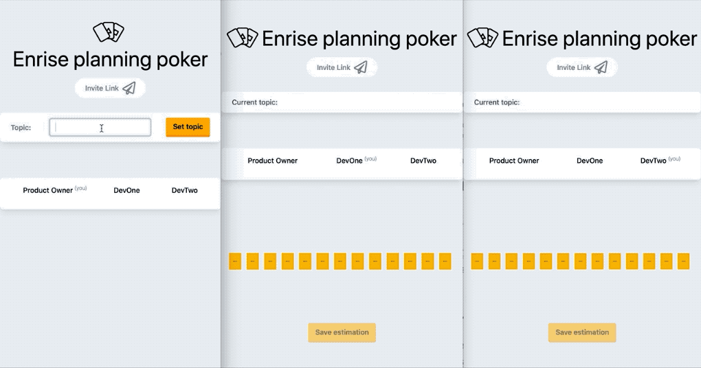

Refactoring to Livewire polling
- Published: 19-06-2020
I recently started my first developer job at Enrise and my colleague Jeroen Groenendijk asked me if I wanted to participate in a side project he was planning. The envisioned Planning Poker tool should help in making estimations for development tickets / stories / epics, etc.
In this blog post I want to show how we refactored our event-driven approach using WebSockets to using Livewire's polling mechanism (see docs).
Before diving in, I'd like to mention the articles by Freek Van der Herten which sparked my interest: Replacing web sockets with Livewire and Building a realtime dashboard (2020 edition).
Goal and working of the application
The basic flow of the application is as follows.
- On the homepage, users can create a new
Roomand invite others using a special invite link. - The creator of the room ("product owner") can then enter a new "Estimation Topic" and start the
Estimation. - The other users then get to choose a card - indicating their estimation in hours - and save their estimation.
- After the product owner stops the estimation, all users get to see what the others have voted.

To this extend, we've created three Livewire components:
- Showing / setting the estimation topic
- Showing participants with their estimation values
- Showing the estimation cards
I'll highlight the changes made to the Livewire component responsible for showing the cards and saving the estimation (#3 on the list).
Additionally, in our initial design we used an event-driven approach using WebSockets to update the data across all participants.
Event-Driven (WebSockets) approach
To update the data across all participants, we initially used an event-driven approach using WebSockets. Livewire provides support for event broadcasting via Laravel Echo out of the box (documentation).
Part of the EstimationCards Livewire component is listed below, which shows the handling of incoming events in the getListeners() method and you can also see it fires an EstimationUpdated event when the participant saves their estimation.
<?php
class EstimationCards extends Component
{
public array $cardValues = [
// lookup table for card values
];
public $member;
public $room;
public string $value = '';
public bool $cardsEnabled = false;
public $estimation;
public $selectedValue;
public function render()
{
return view('livewire.estimation-cards');
}
public function mount($member, $room)
{
// Initialization of component
}
public function getListeners(): array
{
return [
"echo:rooms.{$this->room['id']},EstimationCreated" => 'onEstimationCreated',
"echo:rooms.{$this->room['id']},EstimationClosed" => 'onEstimationClosed',
];
}
public function saveEstimate(): void
{
$value = $this->cardValues[$this->value];
$this->estimation->addEstimate($this->member->id, $value);
$this->cardsEnabled = false;
$this->canSaveEstimate = false;
event(new EstimationUpdated($this->estimation));
}
public function onEstimationCreated(array $event)
{
// set $this->estimation
// set $this->cardsEnabled
// set $this->canSaveEstimate
}
public function onEstimationClosed(array $event)
{
// modify properties...
}
// other methods...
}
The component shares its state via the numerous public properties with the accompanying view as defined in the render() method. As you can see from the listeners, the component actively listens to incoming events and modifies this state accordingly. This new state - e.g. showing the cards whenever receiving a EstimationCreated event - is synced across all participants.
Although this approach works fine, after reading the documentation on Livewire's polling mechanism we decided to try to refactor using this seemingly lighter and simpler approach.
Refactor to using Livewire polling
Livewire offers a wire:poll directive, which can be used to "refresh" a component within a certain interval (default: 2s). Be sure to check out the Livewire documentation to see all available options.
<div wire:poll>
<p>The component will refresh every two seconds</p>
</div>
Using this approach, the public properties we've defined earlier on the Livewire component will not be automatically updated. The trick here, is to share the variables as a function.
<?php
class EstimationCards extends Component
{
public function render()
{
return view('livewire.estimation-cards', [
'estimation' => $this->estimation(),
'cardsEnabled' => $this->cardsEnabled(),
'selectedValue' => $this->selectedValue(),
]);
}
public function estimation()
{
return optional($this->room->activeEstimation);
}
public function cardsEnabled()
{
return $this->estimation() && !$this->memberHasEstimated();
}
public function selectedValue()
{
if (!$this->estimation() || !$this->estimation()->estimates) {
return '';
}
$estimate = $this->estimation()->estimates->where('member_id', $this->member->id)->first();
return $estimate ? $estimate['points'] : '';
}
}
Now, whenever the component is "refreshed" due to the polling interval, the shared variables will be recalculated and therefore updated on the side of all our participants.
As we're providing the variables as functions to the view, we also removed the previously declared properties $estimation, $cardsEnabled and $selectedValue.
This refactor eliminates the need for listening to events completely, and the getListeners() method and the corresponding onSomeEvent() methods were removed.
The blade view for the livewire component now looks as follows:
<div wire:poll>
<form wire:submit.prevent="saveEstimate">
<div class="flex px-4 mb-12">
@foreach ($cardValues as $description => $value)
<div class="estimation-card-container flex-grow inline-flex flex-column justify-content-center align-content-center mr-2">
<input type="radio" id="card-{{ $description }}" name="estimation" wire:model="value" value="{{ $description }}" {{ $cardsEnabled ? '' : 'disabled' }}>
<label class="estimation-card cursor-pointer {{ $selectedValue == $value ? 'estimation-card-selected' : '' }}" style="background-image: url('/images/cards/card{{ $description }}.png');" for="card-{{ $description }}"></label>
</div>
@endforeach
</div>
<div class="justify-center flex py-3">
<button class="enrise-button {{ $cardsEnabled ? '' : 'opacity-50 cursor-not-allowed' }}" {{ $cardsEnabled ? '' : 'disabled' }}>
Save estimation
</button>
</div>
</form>
</div>
Without specifying a polling interval, all Livewire components within the participants browsers will pull in data every 2 seconds. If there are any updates, their DOM will be updated and reflect the changes.
Conclusion
I hope this post could offer some insight in the possibilities of using Livewire's wire:poll mechanism for updating components across multiple viewers.
- As a downside is that polling makes numerous Ajax calls to the backend and requires the execution of more queries than probably necessary.
- However, the code does end up quite a bit lighter and considering that Livewire pauses polling when a tab is not currently actively focused, makes this refactor absolutely worth it in my opinion.
In the refactor of the actual application, we could remove all three Event classes and almost 300 (!) lines of code in total resulting in more expressive and better maintainable code.